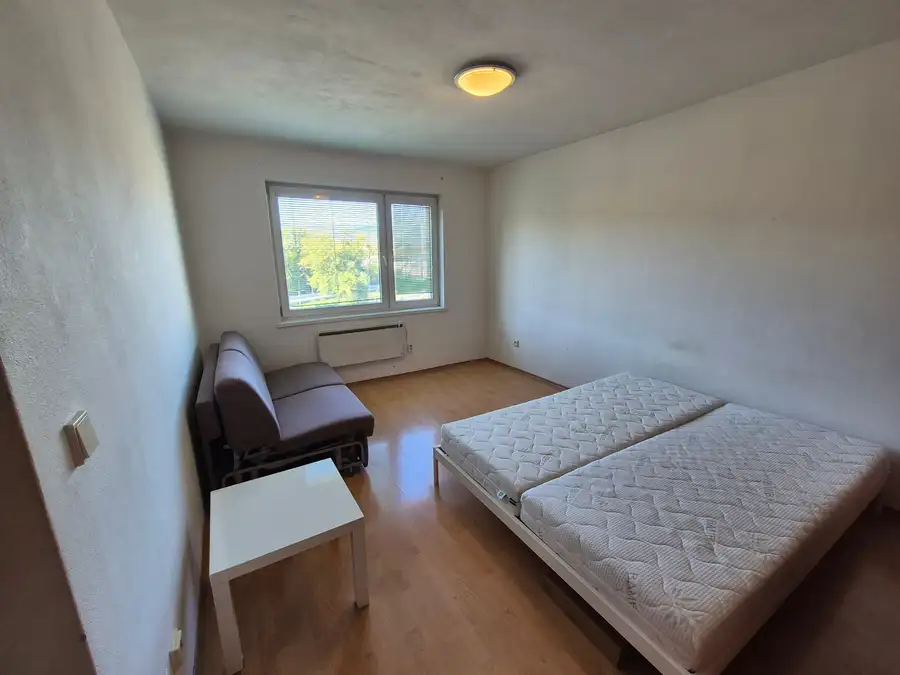
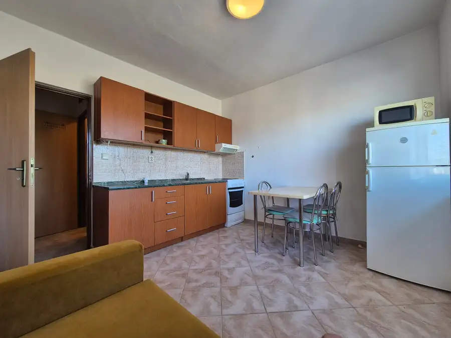
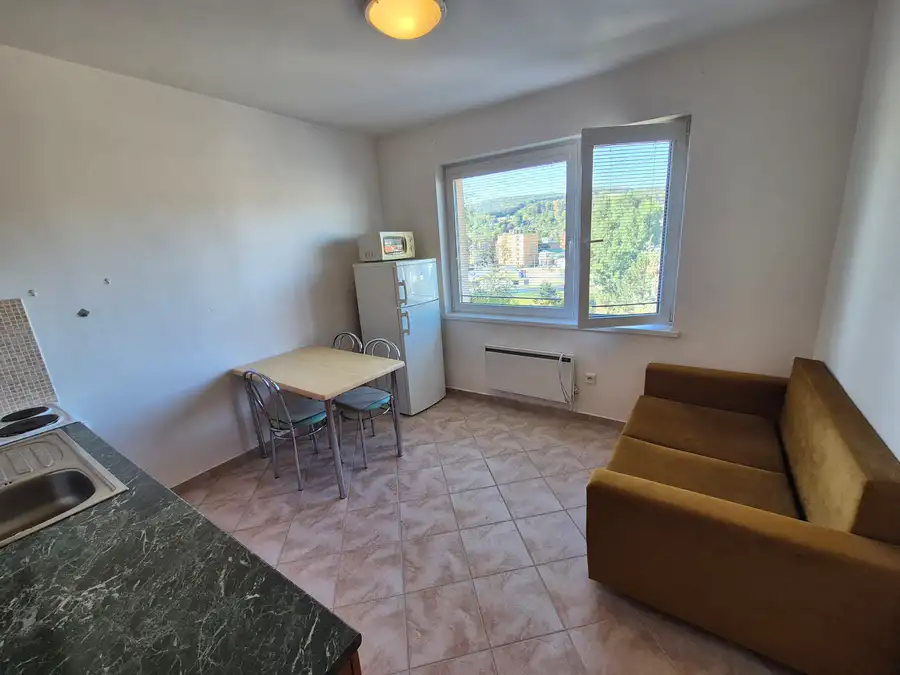
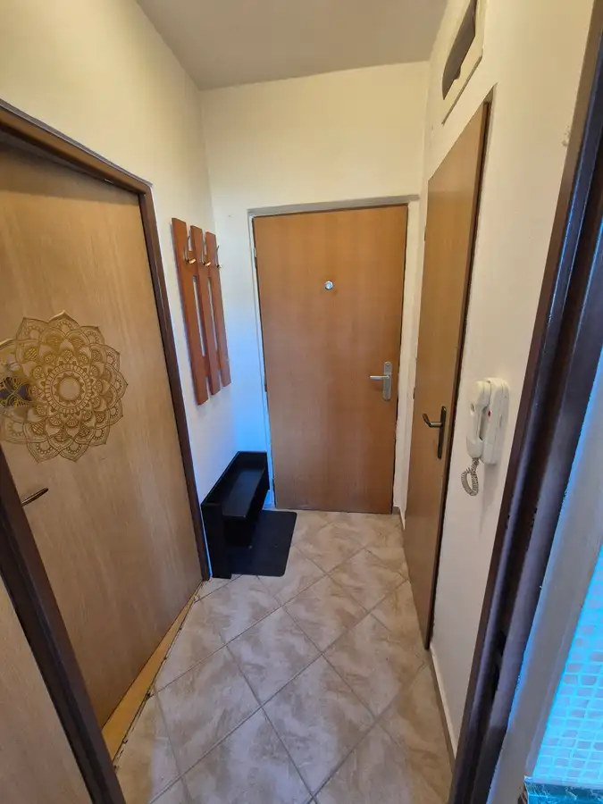
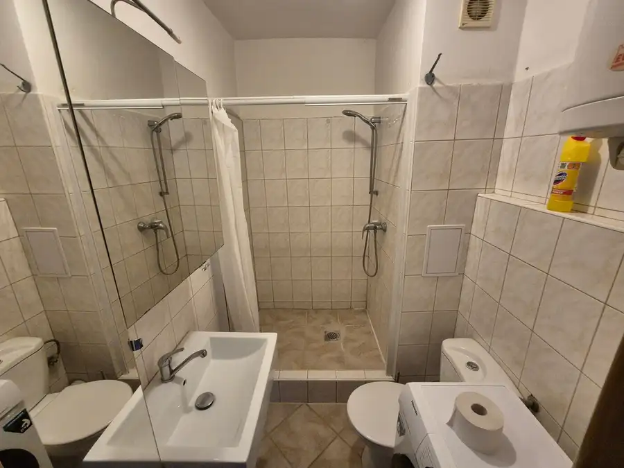
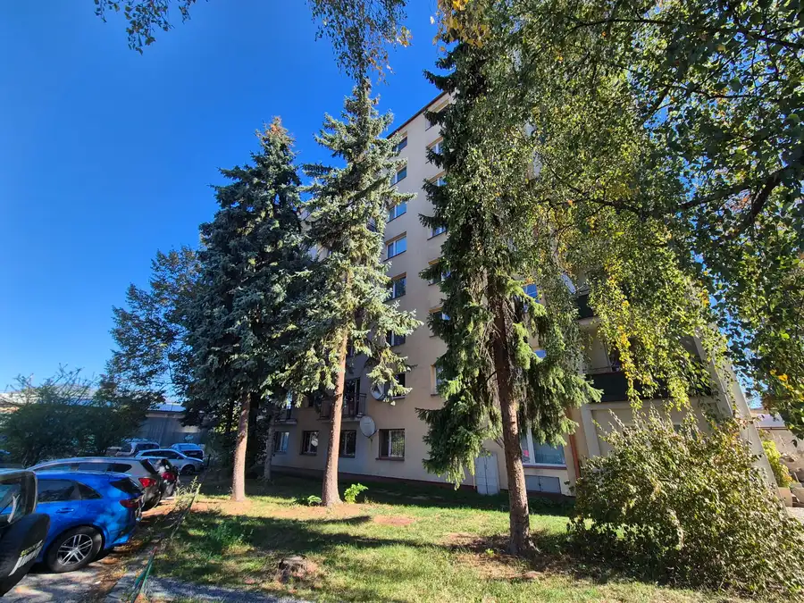

1. izbový byt na prenájom - Uhlisko
Banská Bystrica







- Dispozícia1-izbový
- Plocha34 m²
- Poschodie6. z 8
- StavČiastočná rekonštrukcia
O nehnuteľnosti
TOPLiving: Ponúkame na prenájom zariadený 1 izb. byt o výmere 34m2. Nehnuteľnosť sa nachádza na 6 poschodí bytového domu na ulici Cesta k Smrečine - Uhlisko.Bytík pozostáva zo vstupnej chodby, kúpeľňe so sprchovým kútom, toaletou a pračkou, kuchyne a izby. Izba má sedačku, manželskú posteľ a vstavanú skriňu. V kuchyni je k dispozícií chladnička, mikrovlnka, rozťahovacia sedačka a stôl so stoličkami. K bytu prináleží pivnica na poschodí, kde sa nachádza nehnuteľnosť. Cena prenájmu s energiami 520,-Eur/mes.Pri podpise Nájomnej zmluvy sa platí vratný depozit vo výške 520,-Eur (slúži na nedoplatky, poškodenia), Nájom 520,-Eur a Spracovateľský poplatok 500,-Eur. Prenájom možný od: ihneďPokiaľ Vás ponúkaná nehnuteľnosť zaujala, kontaktujte nás.Kontakt: Marek Jobko 0905 754 029jobko@topliving.skRealitná spoločnosť TOP Living s.r.o. s 20-ročnými skúsenosťami na realitnom trhu poskytuje kompletné realitné služby na profesionálnej úrovni. Dôvera našich klientov je pre nás najdôležitejšia. Viac o nás a našej ponuke na www.topliving.sk
Parametre
- Cena vrátane energií
- Nie
- Druh
- 1 izbový byt
- Dátum zverejnenia
- 30. 09. 2026
- Energetický certifikát budovy
- nie je
- Podlažie
- 6
- Počet izieb / miestností
- 1
- Počet nadzemných podlaží
- 8
- Rok výstavby
- 1996
- Stav nehnuteľnosti
- Čiastočná rekonštrukcia
- Typ
- Prenájom
- Typ konštrukcie
- Panelová
- Vybavenie
- Výťah
- Úžitková plocha
- 34 m²